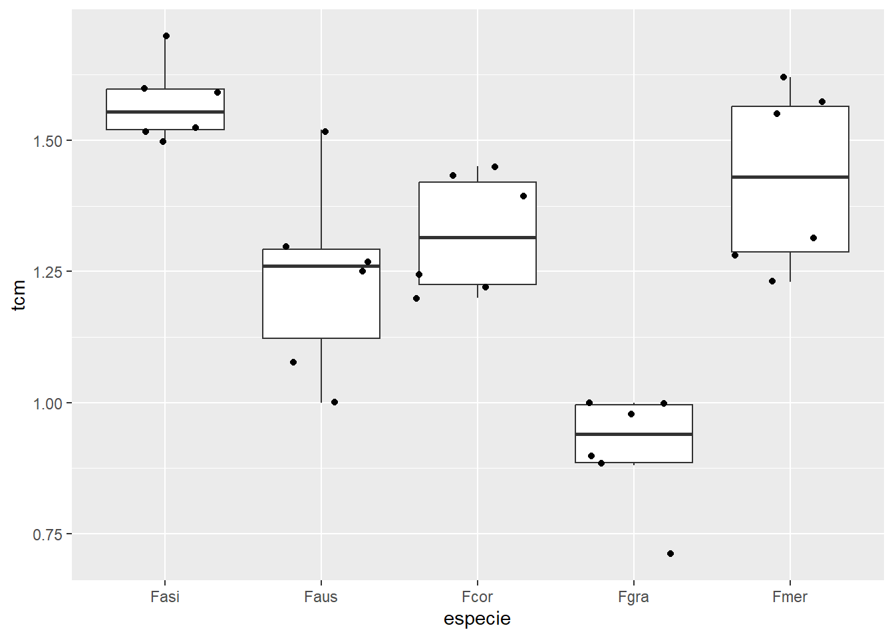

install.packages("emmeans")
install.packages("multcomp")Anova
Quando você precisa comparar as médias de três ou mais grupos, a Análise de Variância (ANOVA) é a ferramenta estatística ideal. Para que a ANOVA seja aplicada corretamente, seus dados precisam atender aos seguintes critérios:
As amostras devem seguir uma distribuição paramétrica (geralmente normal).
As amostras devem ser aleatórias e independentes (os dados de um grupo não devem influenciar os outros).
As populações de onde as amostras foram retiradas devem ter variâncias semelhantes.
Dentro da ANOVA, os tipos mais comuns são a de um fator e a de dois fatores, dependendo de quantas variáveis você está investigando ao mesmo tempo.
ANOVA de um Fator: É usada quando você compara grupos com base em apenas uma característica.
Exemplo: Suponha que um pesquisador queira comparar a mortalidade de uma praga (ex: mosca-branca) após a aplicação de três diferentes tipos de inseticidas (Inseticida A, Inseticida B e Inseticida C). A ANOVA de um fator ajudaria a determinar se há uma diferença significativa na mortalidade da praga entre os inseticidas testados.
ANOVA de Dois Fatores: É usada quando você compara grupos com base em duas características ao mesmo tempo.
Exemplo: Imagine que você quer analisar o número de ovos depositados por uma lagarta em diferentes cultivares de soja (Cultivar 1, Cultivar 2) e também considerar a temperatura ambiente (25°C, 30°C). A ANOVA de dois fatores permitiria analisar o efeito combinado da cultivar e da temperatura no número de ovos depositados pela lagarta.
Interpretação do P-valor na ANOVA
Na ANOVA, se o P-valor for igual ou menor que 0,05 (um nível de significância comum de α=0,05), você rejeita a hipótese nula (que todas as médias populacionais são iguais) e conclui que pelo menos uma das médias é diferente das outras. Isso significa que há uma diferença estatisticamente significativa entre os grupos que você está comparando.
Se o P-valor for maior que 0,05, você aceita a hipótese nula, o que indica que não há evidências suficientes para dizer que as médias populacionais são diferentes. Nesse caso, a diferença observada entre as médias dos seus grupos é provavelmente devido ao acaso.
Pacotes que ainda não foram usados neste site e precisam ser instalados
library(gsheet)
library(ggplot2)
micelial <- gsheet2tbl ("https://docs.google.com/spreadsheets/d/1bq2N19DcZdtax2fQW9OHSGMR0X2__Z9T/edit?gid=959387827#gid=959387827")
# Visualizando os dados com um gráfico de boxplot
micelial |>
ggplot(aes(especie, tcm)) +
geom_boxplot(outlier.colour = NA) + # Removendo os outliers do boxplot
geom_jitter() # Adicionando pontos para visualização
Realizando a ANOVA com um fator
Agora, vamos realizar a ANOVA para testar se existe uma diferença significativa entre as médias de tcm para diferentes especies.
library(rstatix)
anova1 <- aov(tcm ~ especie, data = micelial)
anova1Call:
aov(formula = tcm ~ especie, data = micelial)
Terms:
especie Residuals
Sum of Squares 1.4695800 0.4679167
Deg. of Freedom 4 25
Residual standard error: 0.1368089
Estimated effects may be unbalancedAlternativamente, podemos realizar a ANOVA utilizando a função lm(), que também realiza uma análise de regressão linear. O resultado será o mesmo.
# ANOVA utilizando a regressão linear
anova2 <- lm(tcm ~ especie, data = micelial)
anova2
Call:
lm(formula = tcm ~ especie, data = micelial)
Coefficients:
(Intercept) especieFaus especieFcor especieFgra especieFmer
1.572 -0.335 -0.250 -0.660 -0.145 # Comparando os resultados da ANOVA
anova(anova1)Analysis of Variance Table
Response: tcm
Df Sum Sq Mean Sq F value Pr(>F)
especie 4 1.46958 0.36739 19.629 2.028e-07 ***
Residuals 25 0.46792 0.01872
---
Signif. codes: 0 '***' 0.001 '**' 0.01 '*' 0.05 '.' 0.1 ' ' 1anova(anova2)Analysis of Variance Table
Response: tcm
Df Sum Sq Mean Sq F value Pr(>F)
especie 4 1.46958 0.36739 19.629 2.028e-07 ***
Residuals 25 0.46792 0.01872
---
Signif. codes: 0 '***' 0.001 '**' 0.01 '*' 0.05 '.' 0.1 ' ' 1A função anova() mostra a tabela de ANOVA com os valores de F e p, que nos ajudam a verificar se a diferença entre as médias é significativa.
Verificando os Resíduos
Antes de interpretar os resultados da ANOVA, precisamos verificar se os pressupostos de normalidade e homogeneidade das variâncias são atendidos. Para isso, vamos analisar os resíduos da ANOVA.
# Obtendo os resíduos da ANOVA
residuals(anova1) 1 2 3 4 5 6
-0.07166667 0.01833333 -0.05166667 -0.05166667 0.02833333 0.12833333
7 8 9 10 11 12
0.28333333 0.01333333 0.03333333 0.06333333 -0.15666667 -0.23666667
13 14 15 16 17 18
-0.10166667 -0.08166667 -0.12166667 0.06833333 0.10833333 0.12833333
19 20 21 22 23 24
-0.03166667 0.06833333 -0.20166667 0.08833333 -0.01166667 0.08833333
25 26 27 28 29 30
0.12333333 0.19333333 0.14333333 -0.11666667 -0.14666667 -0.19666667 # Visualizando os resíduos em um histograma
hist(residuals(anova1))
# Realizando o teste de normalidade de Shapiro-Wilk nos resíduos
shapiro.test(residuals(anova1))
Shapiro-Wilk normality test
data: residuals(anova1)
W = 0.9821, p-value = 0.8782Quando o valor de p for maior que 0,05 no teste de Shapiro-Wilk, podemos concluir que os resíduos são normalmente distribuídos.
Testando a Homogeneidade das Variâncias
A ANOVA pressupõe que as variâncias dos grupos sejam homogêneas. Podemos testar isso de duas maneiras: utilizando o Teste de Bartlett ou o Teste de Levene.
# Teste de Bartlett para homogeneidade de variâncias
bartlett.test(tcm ~ especie, data = micelial)
Bartlett test of homogeneity of variances
data: tcm by especie
Bartlett's K-squared = 4.4367, df = 4, p-value = 0.3501# Teste de Levene para homogeneidade de variâncias
levene_test(tcm ~ especie, data = micelial)# A tibble: 1 × 4
df1 df2 statistic p
<int> <int> <dbl> <dbl>
1 4 25 1.76 0.169Ambos os testes verificam se as variâncias dos grupos são iguais. Se o valor p for maior que 0,05, as variâncias podem ser consideradas homogêneas.
O Teste de Bartlett verifica a homogeneidade das variâncias e é mais eficaz quando os dados seguem uma distribuição normal. Ele tem maior poder para identificar diferenças nas variâncias quando a normalidade é atendida.
O Teste de Levene também testa a homogeneidade das variâncias, mas é mais confiável em casos de desvios da normalidade. Ele é ideal para quando os dados não seguem uma distribuição normal perfeita.
Realizando Contrastes e Estimativas de Médias
Após a ANOVA, podemos realizar contrastes para comparar as médias entre os grupos utilizando o pacote emmeans.
# Carregando o pacote 'emmeans' para contrastes
library(emmeans)
# Realizando os contrastes das médias
m <- emmeans(anova2, ~ especie)
m especie emmean SE df lower.CL upper.CL
Fasi 1.572 0.0559 25 1.457 1.69
Faus 1.237 0.0559 25 1.122 1.35
Fcor 1.322 0.0559 25 1.207 1.44
Fgra 0.912 0.0559 25 0.797 1.03
Fmer 1.427 0.0559 25 1.312 1.54
Confidence level used: 0.95 O pacote emmeans() permite que você calcule médias ajustadas para as variáveis de interesse, com base no modelo estimado. O pacote também permite que você faça comparações entre médias ajustadas usando contrastes, que podem incluir comparações múltiplas ou post-hoc (para analisar mais detalhadamente onde estão as diferenças entre os grupos). Ele também calcula intervalos de confiança para as médias ajustadas, permitindo uma compreensão mais detalhada da variabilidade dos dados.
Comparações Múltiplas (Post-Hoc)
Se a ANOVA indicar que existem diferenças significativas, podemos realizar comparações múltiplas para identificar quais grupos são diferentes entre si. O pacote multcomp é utilizado para essas comparações.
# Carregando o pacote 'multcomp'
library(multcomp)
# Realizando comparações múltiplas
cld(m) # Mostra as letras compactas (grupos que são semelhantes) especie emmean SE df lower.CL upper.CL .group
Fgra 0.912 0.0559 25 0.797 1.03 1
Faus 1.237 0.0559 25 1.122 1.35 2
Fcor 1.322 0.0559 25 1.207 1.44 2
Fmer 1.427 0.0559 25 1.312 1.54 23
Fasi 1.572 0.0559 25 1.457 1.69 3
Confidence level used: 0.95
P value adjustment: tukey method for comparing a family of 5 estimates
significance level used: alpha = 0.05
NOTE: If two or more means share the same grouping symbol,
then we cannot show them to be different.
But we also did not show them to be the same. # Realizando comparações pareadas
pairs(m) contrast estimate SE df t.ratio p.value
Fasi - Faus 0.335 0.079 25 4.241 0.0023
Fasi - Fcor 0.250 0.079 25 3.165 0.0302
Fasi - Fgra 0.660 0.079 25 8.356 <.0001
Fasi - Fmer 0.145 0.079 25 1.836 0.3765
Faus - Fcor -0.085 0.079 25 -1.076 0.8169
Faus - Fgra 0.325 0.079 25 4.115 0.0031
Faus - Fmer -0.190 0.079 25 -2.405 0.1469
Fcor - Fgra 0.410 0.079 25 5.191 0.0002
Fcor - Fmer -0.105 0.079 25 -1.329 0.6761
Fgra - Fmer -0.515 0.079 25 -6.520 <.0001
P value adjustment: tukey method for comparing a family of 5 estimates # Fazendo uma matriz de resultados
pwpm(m) Fasi Faus Fcor Fgra Fmer
Fasi [1.572] 0.0023 0.0302 <.0001 0.3765
Faus 0.335 [1.237] 0.8169 0.0031 0.1469
Fcor 0.250 -0.085 [1.322] 0.0002 0.6761
Fgra 0.660 0.325 0.410 [0.912] <.0001
Fmer 0.145 -0.190 -0.105 -0.515 [1.427]
Row and column labels: especie
Upper triangle: P values adjust = "tukey"
Diagonal: [Estimates] (emmean)
Lower triangle: Comparisons (estimate) earlier vs. laterO pacote multcomp é utilizado para realizar comparações múltiplas (post-hoc) após modelos lineares ou ANOVA. Ele ajuda a comparar as médias de diferentes grupos, ajustando para múltiplas comparações e controlando o erro tipo I.
A função cld() exibe as letras compactas, que indicam quais grupos são significativamente diferentes. As comparações pareadas são feitas com a função pairs(), e a função pwpm() gera uma matriz de resultados.